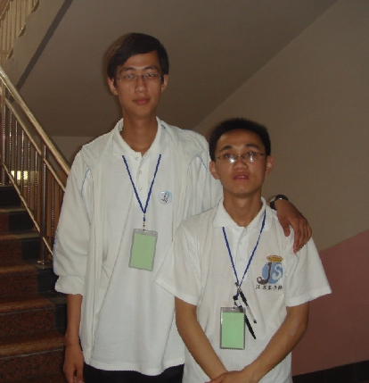
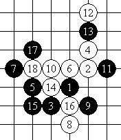

全团赛虽然没有跟他在一个队，但是在一起生活，我还是很满足了。
沈瓒的斜月很历害，要是什么时候他能够教我一招半式的话，砍小白（徐白）也不用那么费劲了．
可是我怎么说他也不肯教我，就丢给我一个银月的谱，然后撂下一句：＂你去拆吧．＂
那天对他们队，可怜的少帅，在两分钟内就让沈瓒给秒杀了．原来是前天晚上小沈准备了一晚上，用他的话说，应该从一切可拿分的地方去拿分．

#2 Re:同城的角逐DD快乐的沈瓒 作者：五子酷 发表时间：2008-6-20 8:25:32
果然高！ 他将成为五子棋界最高的选手，呵呵！~
#3 Re:同城的角逐DD快乐的沈瓒 作者：gerbo 发表时间：2008-6-20 10:15:17
看了这个局面，深有启发。黑17急于求成了。值得学习的一盘。~
#4 Re:同城的角逐DD快乐的沈瓒 作者：百医天使 发表时间：2008-6-21 13:29:49
跟他在一起照相，我感觉自己有结自卑感。
你不是一直说你是他老板，他和你说话时，总得低头的吗，怎么自卑了呢？！
#5 Re:同城的角逐DD快乐的沈瓒 作者：牛牛 发表时间：2008-6-23 11:07:20
在中国五子棋坛,小沈可以俯视一切对手了
#6 Re:同城的角逐DD快乐的沈瓒 作者：Solmyr 发表时间：2008-6-24 18:27:47
我说~~~~~~~丸子啊！咱们能不当小说，当记实写成不！？首先~我现在很不快乐啊！因为真还没到我可以快乐的时候！其次~我可以大胆地跟大家说：我是银月盲！身边没有半点好的银月谱啊！怎么。。。。。。而且~你也没叫我教你斜月啊~~~~~~再说我斜月也不是很强！还有就是少帅的事情！我根本没准备~我都说过我前一天晚上一直愁着怎么对付大鱼来着！而且我哪里想到能撞江苏2啊！虽然他的那一分我是肯定要拿下的，但是真不是为了要拿能拿到的每一分~虽然这样说也没错吧（只有最后一盘为了我们队冲名次）！但是除了和他那盘，我真的都想以和为主的！我是去练防守的~而不是进攻！要不我和王有志大哥那盘真的会拼命，而不会死得那么窝囊！
#7 Re:同城的角逐DD快乐的沈瓒 作者：黄药师 发表时间：2008-6-24 20:49:56
晕，这么高啊！

#8 Re:同城的角逐DD快乐的沈瓒 作者：五子酷 发表时间：2008-6-25 8:20:31
楼上的是 北交大的赵宁高手吗？
#9 Re:Re:同城的角逐DD快乐的沈瓒 作者：斜月 发表时间：2008-6-26 9:58:38
引用：
原文由 五子酷 发表于 2008-6-25 8:20:31 :
楼上的是 北交大的赵宁高手吗？
寒星！哈哈，这才是我（但和高手没一点关系），黄药师这个名字是几年前的，现在不用了（变成了“药匣子”），上面那个黄药师不是我
#10 Re:同城的角逐DD快乐的沈瓒 作者：叶昀 发表时间：2008-7-16 22:22:28
难得。。。。
#11 Re:同城的角逐DD快乐的沈瓒 作者：方圆之外 发表时间：2009-5-15 10:29:27
俩WS男。。。